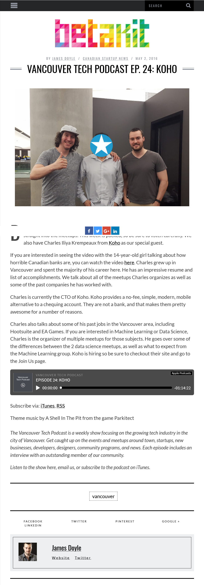

Charles on Vancouver Tech Podcast focused talking about Koho
Vancouver Tech Podcast interviews Charles Iliya Krempeaux (CTO of Koho)
by Charles Iliya Krempeaux at
I was interviewing on the Vancouver Tech Podcast (the most popular tech podcast in Vancouver) by Drew Ogryzek and James Doyle for their episode 24.
The interview was about Koho and my role as CTO of Koho.
